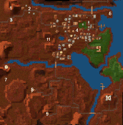

Free Haven: Surrounding area

| 1. | Temple of the moon, Dungeon [Map] |
| 2. | Well, it will make fire archers appear. |
| 3. | Rockham's Pride, you will also find Chadwick here. |
| 4. | Town of Free Haven |
| 5. | Lighthouse |
| 6. | Tomb of Ethric the Mad [Map] |
| 7. | Obelisk |
| 8. | Temple of Baa |
| 9. | Dragoon's Keep [Map] |
| 10. | Castle Temper, home of Lord Osric Temper. Master Plate on the top. |
| 11. | Shrine of Accuracy |
Leave us a message mgrounds@hotmail.com